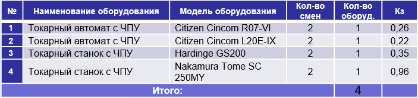

Пример Экспериментальных проектов Солвер - на примере ЭП 14-03 ОАО «Завод «Элекон»
Проектной группой в процессе реализации Экспериментального проекта были выполнены следующие работы:
проведен анализ заданной номенклатуры деталей - 340 наименований;
детали распределены на группы по видам обработки, габаритам, материалу и в каждой группе выбраны детали-представители 4 группы ;
разработаны 3D модели деталей-представителей по чертежам Заказчика в системе автоматизированного трёхмерного проектирования Creo;
разработаны технологические процессы обработки деталей-представителей с определением моделей необходимого оборудования, необходимой оснастки и режущего инструмента;
проведено моделирование обработки деталей-представителей в системе PartMaker c определением времени обработки;
определено расчётное время обработки всей заданной номенклатуры деталей по результатам моделирования обработки деталей-представителей;
определено количество необходимого металлорежущего оборудования и проведен расчёт его технологической загрузки;

подготовлена отчётная документация по Проекту в составе: презентационные материалы, предложение по составу оборудования;
1. Повышение качества изделий за счет:
• высокого постоянства выполняемых на предлагаемом оборудовании размеров, формы и технологических требований чертежа, что сокращает затраты на проведение контрольных операций;
• высокой стабильности изготовленных на этом оборудовании деталей, что сокращает затраты на сборочных операциях и повышает эксплуатационные свойства изделия.
2. Сокращение циклов производства за счет:
• сокращения времени механической обработки деталей в рамках годовой программы на 52 308 часов, что обеспечивает в среднем рост производительности по механической обработке в 10 раз;
3. Сокращение затрат на производство:
• сокращение зависимости от рынка труда основных рабочих - 11 чел.;
• экономия по заработной плате основных рабочих - 3 531 000 руб.;
• экономия по затратам на электроэнергию – 801 000 руб.;
• общая экономия за счет совершенствования технологии изготовления деталей составляет – 14 700 000 руб./год.
Окупаемость капитальных затрат (через снижение технологической себестоимости изделий) в течение 4,5 лет.